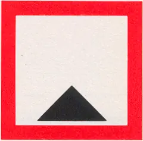
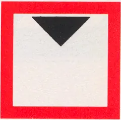
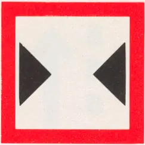
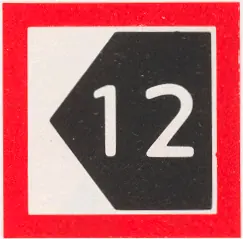

C BEPERKINGSTEKENS
Rijnvaartpolitiereglement 1995
C.1 | Beperkte waterdiepte. |  |
C.2 | Beperkte doorvaarthoogte. |  |
C.3 | Beperkte breedte van doorvaart of vaargeul. |  |
C.4 | Vaartbeperkingen; deze worden nader onder het teken aangegeven. | |
C.5 | De vaargeul bevindt zich op enige afstand van de rechter- (linker)oever; het op het bord voorkomende getal geeft in meters de afstand aan die de schepen uit de oever dienen te blijven, gerekend vanaf het bord. |  |